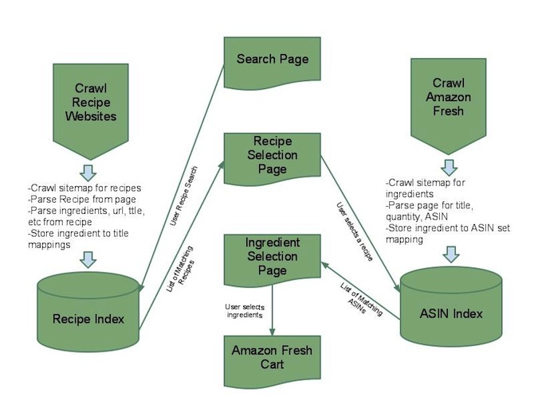

ProjectNomNom
Introduction
Today, there are millions of cooking recipes available online. In most cases, a person will search for a recipe (either through Google or a recipe site such as AllRecipes.com) and once an ideal recipe is found, he or she will visit a grocery store to purchase the necessary ingredients.
ProjectNomNom seeks to eliminate the visit to the grocery store by creating a specialized search engine for recipes found on the recipes wiki on Wikia. In the search results section, each result will include a link that will automatically fill up an AmazonFresh cart for the ingredients specified in the recipe. After the cart has been filled, the user can verify the ingredients and purchase them, all without stepping away from the computer!
Development Strategy
There will be four major tasks for ProjectNomNom:
- Crawling and storage of recipes found on select recipe sites
- Crawling and storage of AmazonFresh's catalogue
- Extraction of ingredients from the recipes
- A search interface that will allow searches and will include links that will fill up AmazonFresh carts for each result
We will focus on the recipes available on the recipes wiki on Wikia. This wiki has a good selection of recipes (over 43,000) and all of the recipes are well-structured, making them ideal for a web crawler. Heritrix will be used to perform the crawling. We are restricting ourselves to the recipes wiki on Wikia in order to keep the scope of the project reasonable. The system will, however, work with data from any recipe site as long as the different attributes discussed below are scraped from the crawled pages.
As recipes are crawled, they will be indexed and stored in Solr (an information retrieval platform). The attributes that we are interested in are the URL that originated the recipe, the ingredients section, the actual recipe, and recipe ratings (to help with relevance ranking in Solr). Although all of these attributes will be indexed, we may not store all of them in the Solr index as a way of keeping the size of the index down and respecting any copyrights on the recipes.
The Solr server for the recipes will provide the backend for recipe searches. The search interface will tie together the results (from crawled Wikia data) and AmazonFresh's catalogue. Next to each result, there will be a link that will allow the user to add all of the items associated with the recipe to his or her AmazonFresh cart. Of course, the user will also be able to click on the recipe to view it on the recipes wiki on Wikia. There are two preliminary mock-ups of the search interface available:
{kind=link}
{kind=link}
Before AmazonFresh carts can be filled, we must provide a system for extracting the ingredients from the recipes. In order the aid with "ingedient-extraction", we will crawl and store AmazonFresh's catalogue (this is feasible since AmazonFresh has fewer than 150,000 items in its catalogue). AmazonFresh's product pages are very consistent and well-structured which will make (once again) crawling easy. Attributes such as the item's name, price, rating, and ASIN's will be stored in another Solr server. The product names on AmazonFresh appear to be very well formatted in that they contain simple names followed by information such as quantity and place of origin, separated by a comma.
When a user searches for a recipe, the ingredients section for each recipe will be inputted as a query into the Solr server containing AmazonFresh's data. (The ingredients section will likely be split up, perhaps by line, and multiple queries will be executed). The query will be limited to the simple names of the items in the catalogue and the results returned by Solr will indicate strong matches for phrases in the ingredients section that appear to be ingredients. From these results, a set of items will be chosen and the ASIN's will be used to create an AmazonFresh cart. In addition, the quantities will also be parsed and selection of products will take into account the quantities represented on the recipe.
Based on the accuracy of the results from using the querying method, we may also implement a machine learning algorithm such as the Naive Bayes algorithm for better results, but there are no plans to implement this as of this writing.
Below is a high-level diagram of the system:
Milestones
The following is a tentative set of checkpoints:
- Due by October 29:
- Set up Redmine for project management purposes (Josh)
- Set up github for project repository and train team members on its use (Ryan)
- Decide on which crawler to use and set up the Solr servers (Josh and Aryan)
- Parse the recipe pages for attributes such as title and ingredients (Roy)
- Parse AmazonFresh item titles for amounts and extraneous information (e.g., "12 oz", "non-fat") (Roy)
- Crawl data from the recipe site and AmazonFresh and index the data into Solr (Josh and Aryan)
- Research web servers and set one up that will support both Java and PHP (likely Apache Tomcat ) (Ryan)
- Complete mock-ups of all of the UI components and a prototype for dynamic search results (Noe)
- Due by November 17:
- Create working version of user-interface
- Implement ingredient-extraction and backend for mapping recipe items to AmazonFresh' catalogue
- Create product recommendation conflict resolution process
- Due by December 3:
- Evaluate ingredient-extraction accuracy and implement machine learning algorithm, if necessary
- Start write-up and evaluation
- Due by December 14:
- Present and evaluate project
Evaluation
The following are some of the tests that we will perform to evaluate ProjectNomNom's effectiveness:
- Test the effectiveness of recipe searching by trying different queries and checking the proportion of results that are valid in the top 10 results.
- Test the effectiveness of the ingredient-extractor by grabbing a random sample of recipes and seeing how many of the ingredients in the ingredient-section are recognized.
- Test the effectiveness of the ingredient-extractor using recipes for some common and exotic food items such as:
- Easy: spaghetti, meatload, mashed potatoes
- Medium: hummus, sourdough, lemon
- Hard: borscht, turdunken, tabouli
- Test how well the algorithm chooses an item from a set of similar items (i.e., do product ratings and price affect the decision properly).
Team Members
The team is comprised of the following people:
- Noe Khalfa (noekh@cs)
- Roy McElmurry (roy@cs)
- Josh Mottaz (gerhalt@cs)
- Aryan Naraghi (aryan@cs)
- Ryan Oman (namos@cs)